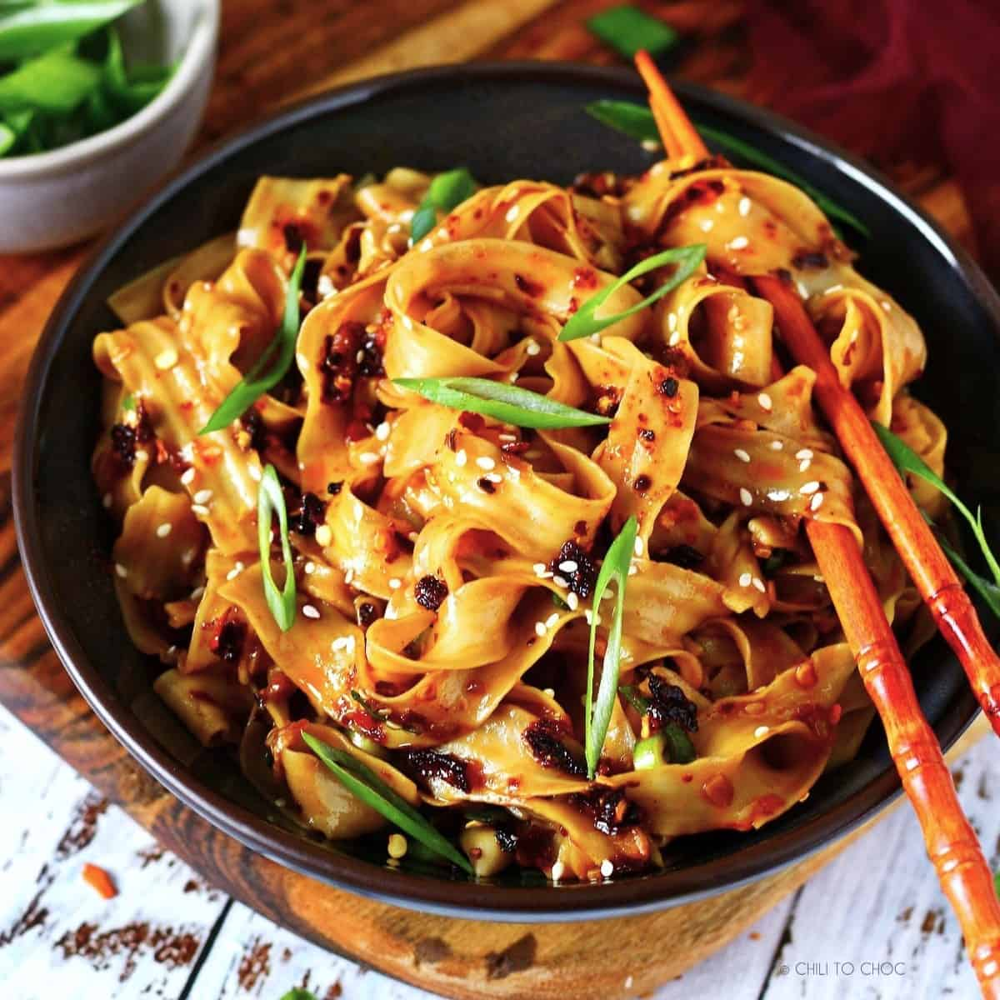
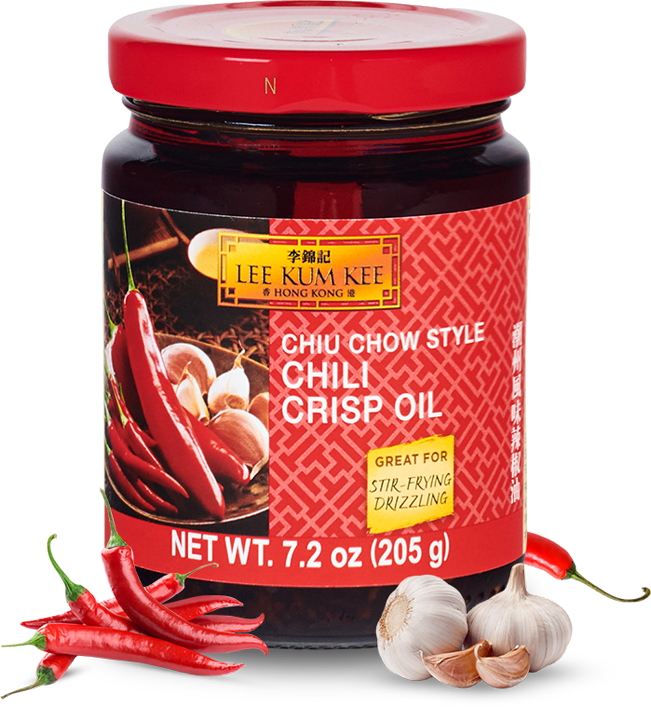
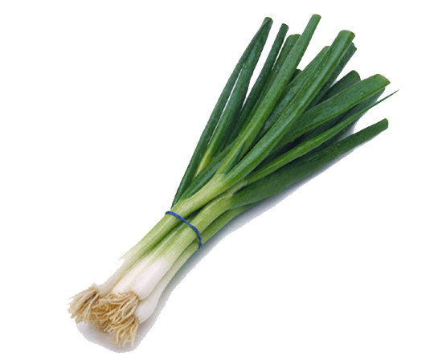
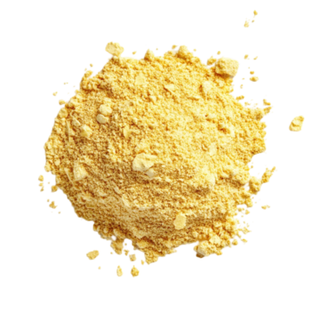

Garlic Chili Oil Noodles
Introduction
This recipe is easy to follow and most of the ingredients required can be found in the typical Asian household pantry. I chose this recipe because I love spicy dishes and garlic.

Prep time Cook time Serving(s)
5 minutes 5 minutes 1
Ingredients
- 4 oz dried wheat noodles (taiwanese style sliced noodles/frozen udon/instant ramen)
- 3 cloves minced garlic
- ½ tablespoon red chili flakes (sichuan chili flakes/gochugaru)
- 1 green onion (finely chopped)
- ½ teaspoon Chinese black vinegar
- 1 tsp dark soy sauce
- ½ tsp regular soy sauce
- ½ tsp chicken bouillon powder
- ¼ tsp granulated sugar
- 1 tsp sesame seeds
- 3 tbsp vegetable oil
Instructions
- In a medium pot filled with enough water, bring to a boil on medium-high heat (100°C). Boil noodles until al dente for 2-3 minutes or according to package directions. Strain the noodles and transfer them to a bowl.
- In the centre of the noodles, add regular and dark soy sauce, Chinese black vinegar, garlic, chicken bouillon powder, white granulated sugar, green onions, red chili flakes, sesame seeds.
- Heat vegetable oil or any neutral oil in a small saucepan on medium-high heat. Once it smokes, remove off heat and pour the hot oil over the green onions, garlic and gochugaru.
- Mix the noodles with chopsticks or kitchen tweezers until they’re well combined.
- Garnish with green onions and sesame seeds.


